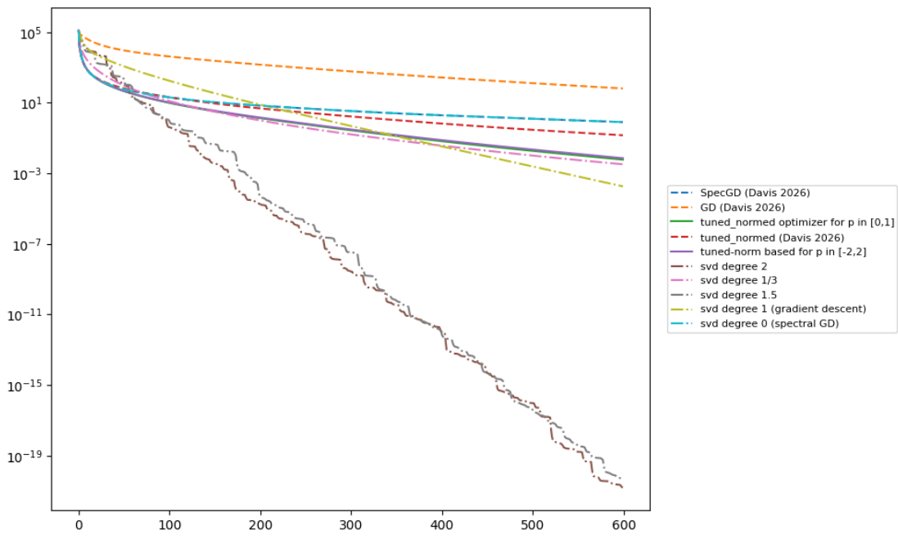
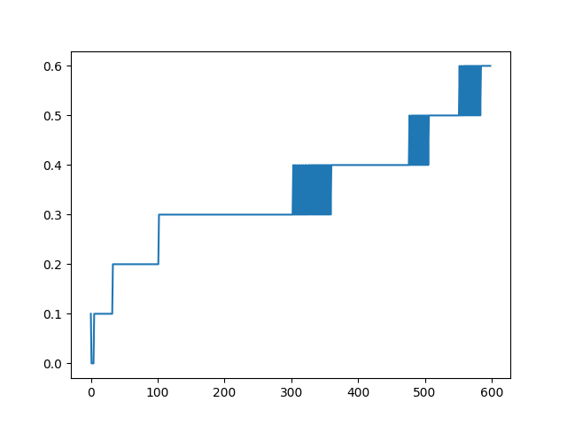
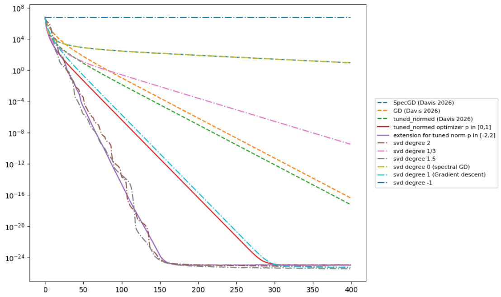
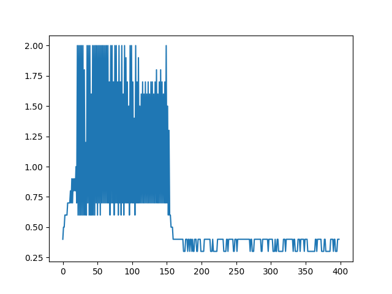

steepest descent: view from schatten norm
Muon [Jordan et al., 2024] has recently shown promising performance in training neural networks. To derive its formulation, there are several theoretical approaches: RMS-RMS norm-based [Bernstein, 2025] or Linear Minimization Oracle (my favorite one). However, in this post, I want to use the Schatten norm-based approach to deduce a more general class of optimizers that interpolates between Muon and classical gradient descent.
This post is motivated by the work of [Davis & Drusvyatskiy, 2026], where they derive a nuclear rank condition to determine when Spectral gradient descent (or Muon) dominates gradient descent in training neural networks. Both gradient descent and spectral gradient descent are special cases of Schatten norm-based optimizers.
Schatten Norm
Let \( p \) be a positive number and \( A \in \mathbb{R}^{m \times n} \). The Schatten \( p \)-norm of \( A \) is defined by: \[ \|A\|_p = \left( \sum_{i=1}^r \sigma_i(A)^p \right)^{1/p} \] where \( \sigma_i(A) \) are the singular values of \( A \) (\( \sigma_1 \geq \sigma_2 \geq \cdots \geq \sigma_r \)) and \( r \) is the number of positive singular values. Notice that:
- \( p = 1 \) corresponds to the nuclear norm (sum of all singular values).
- The Schatten 2-norm is the Frobenius norm. Indeed: \[ \|A\|_F = \sqrt{\mathrm{Tr}(A^TA)} = \sqrt{\mathrm{Tr}(VS U^T USV^T)} = \sqrt{\mathrm{Tr}(S^2)} = \left(\sum_{i=1}^r \sigma_i(A)^2\right)^{1/2} = \|A\|_2 \]
- The Schatten \( \infty \)-norm is the spectral norm (largest singular value).
Structure of the Loss Function
We define a loss function \( \mathcal{L} : \mathbb{R}^{m \times n} \to \mathbb{R} \). The only assumption we need for further analysis is \( L \)-smoothness.
Choice of Update Rule
There are several ways to deduce a descent direction. The main principle is to find \( \Delta W \) such that \( \mathcal{L}(W + \Delta W) < \mathcal{L}(W) \):
- Taylor expansion: Using the smoothness of the loss function: \[ \mathcal{L}(W + \Delta W) = \mathcal{L}(W) + \langle \nabla \mathcal{L}(W), \Delta W \rangle_F + \frac{1}{2}\langle \Delta W, \nabla^2 \mathcal{L}(W) \Delta W \rangle + \cdots \] Dropping higher-order terms and optimizing gives \( \Delta W^\star = -\nabla^2 \mathcal{L}(W)^{-1} \nabla \mathcal{L}(W) \), but computing the Hessian inverse is prohibitively expensive in practice.
-
\( L \)-smoothness upper bound:
Minimizing this upper bound: \[ \Delta W^\star = \arg\min_{\Delta W \in \mathbb{R}^{m \times n}} \langle \nabla \mathcal{L}(W), \Delta W \rangle + \frac{L}{2}\|\Delta W\|_F^2 \]PropositionLet \( \mathcal{L} \) be \( L \)-smooth. Then: \[ \mathcal{L}(W + \Delta W) \leq \mathcal{L}(W) + \langle \nabla \mathcal{L}(W), \Delta W \rangle + \frac{L}{2}\|\Delta W\|_F^2 \]
- Linear Minimization Oracle (LMO) under constraints: Similar to the above but eliminating the penalty term and adding a constraint: \[ \Delta W^\star = \arg\min_{\Delta W \in \mathcal{X}} \langle \nabla \mathcal{L}(W), \Delta W \rangle \]
We now consider the LMO under Schatten \( p \)-norm constraint, which will be the foundation for further analysis:
\[ \Delta W^\star = \arg\min_{\|\Delta W\|_p = 1} \langle \nabla \mathcal{L}(W), \Delta W \rangle \]We use two inequalities to find the minimum: the Von Neumann trace inequality and the Hölder inequality.
Combining these two lemmas:
\[ |\langle \nabla \mathcal{L}(W), \Delta W \rangle| \leq \left(\sum_i \sigma_i(\Delta W)^p\right)^{1/p} \left(\sum_i \sigma_i(\nabla \mathcal{L})^q\right)^{1/q} = \|\nabla \mathcal{L}(W)\|_q \]This implies \( \langle \nabla \mathcal{L}(W), \Delta W \rangle \geq -\|\nabla \mathcal{L}(W)\|_q \) when \( \|\Delta W\|_p = 1 \). The equality holds iff \( \Delta W \) shares the same singular vectors with \( \nabla \mathcal{L}(W) \) and: \[ \frac{\sigma_1(\Delta W)^p}{\sigma_1(\nabla \mathcal{L}(W))^q} = \frac{\sigma_2(\Delta W)^p}{\sigma_2(\nabla \mathcal{L}(W))^q} = \cdots = \frac{\sigma_r(\Delta W)^p}{\sigma_r(\nabla \mathcal{L}(W))^q} \] We can compute the singular values of \( \Delta W \) explicitly. Let \( a = \sigma_i(\Delta W)^p / \sigma_i(\nabla \mathcal{L}(W))^q \). Using the norm condition \( \|\Delta W\|_p = 1 \): \[ \sum_{i=1}^r \sigma_i(\Delta W)^p = 1 \implies a \sum_{i=1}^r \sigma_i(\nabla \mathcal{L}(W))^q = 1 \implies a = \frac{1}{\|\nabla \mathcal{L}(W)\|_q^q} \] Therefore: \[ \sigma_i(\Delta W) = a^{1/p} \sigma_i(\nabla \mathcal{L}(W))^{q/p} = \frac{\sigma_i(\nabla \mathcal{L}(W))^{1/(p-1)}}{\|\nabla \mathcal{L}(W)\|_q^{1/(p-1)}} = \frac{\sigma_i(\nabla \mathcal{L}(W))^{q-1}}{\|\nabla \mathcal{L}(W)\|_q^{q-1}} \] In summary, the descent direction is:
We might use a more general constraint \( \mathcal{X} = \{W \in \mathbb{R}^{m \times n} \mid \|W\|_p = a > 0\} \) and apply the same analysis to get: \[ \min_{W \in \mathcal{X}} \langle \nabla \mathcal{L}(W), \Delta W \rangle = -a\|\nabla \mathcal{L}(W)\|_q \] The equality occurs when \( \sigma_i(\Delta W) = \dfrac{a\, \sigma_i(\nabla \mathcal{L}(W))^{q-1}}{\|\nabla \mathcal{L}(W)\|_q^{q-1}} \).
Additional Penalty
We now add a Schatten \( p \)-norm penalty to the linear term in the LMO. This is similar to the inequality obtained from the \( L \)-smoothness assumption, but replacing the Frobenius norm by the Schatten norm. This approach can provide a desirable descent direction and optimal step size since the optimization occurs across the global matrix space. We aim to find: \[ \Delta W^\star = \arg\min_{\Delta W \in \mathbb{R}^{m \times n}} \langle \nabla \mathcal{L}(W), \Delta W \rangle + \frac{L}{2}\|\Delta W\|_p^2 \] Decomposing over \( a = \|\Delta W\|_p \): \[ \min_{\Delta W} \langle \nabla \mathcal{L}(W), \Delta W \rangle + \frac{L}{2}\|\Delta W\|_p^2 = \min_{a \geq 0,\, \|\Delta W\|_p = a} \langle \nabla \mathcal{L}(W), \Delta W \rangle + \frac{L}{2}a^2 = \min_{a \geq 0} \frac{L}{2}a^2 - a\|\nabla \mathcal{L}(W)\|_q \] The minimum of this quadratic model is reached at \( a = \|\nabla \mathcal{L}(W)\|_q / L \). Therefore: \[ \sigma_i(\Delta W) = \frac{a\, \sigma_i(\nabla \mathcal{L}(W))^{q-1}}{\|\nabla \mathcal{L}(W)\|_q^{q-1}} = \frac{\sigma_i(\nabla \mathcal{L}(W))^{q-1}}{L \cdot \|\nabla \mathcal{L}(W)\|_q^{q-2}} \] which results in: \[ \Delta W^\star = -\frac{1}{L \cdot \|\nabla \mathcal{L}(W)\|_q^{q-2}} US^{q-1}V^T \]
Neural Network with One Layer
We now see how Schatten norm-based optimizers apply to deep learning. I consider only the one-layer case; the analysis is partially based on [Davis & Drusvyatskiy, 2026]. Let \( W \) be the weight matrix, \( A \) the input matrix, and \( f \) an \( L \)-smooth function. The loss function is: \[ \mathcal{L}(W) = f(WA) \] By \( L \)-smoothness: \[ \mathcal{L}(W + \Delta W) = f(WA + \Delta WA) \leq \mathcal{L}(W) + \langle \nabla \mathcal{L}(W), \Delta W \rangle + \frac{L}{2}\|\Delta WA\|_F^2 \] We use a generalized Hölder inequality for Schatten norms:
For \( p \geq 2 \): \( \|\Delta WA\|_F^2 \leq \|\Delta W\|_p^2 \|A\|_q^2 \). Setting \( L_p = L\|A\|_q^2 \), the update rule for this sub-problem becomes: \[ \Delta W_p = \arg\min_{\Delta W} \langle \nabla \mathcal{L}(W), \Delta W \rangle + \frac{L}{2}\|\Delta W\|_p^2 \|A\|_q^2 \] \[ \Delta W_p = -\frac{1}{L_p \cdot \|\nabla \mathcal{L}(W)\|_{p'}^{p'-2}} US^{p'-1}V^T \] The guaranteed decrease of the loss function after the update: \[ \mathcal{L}(W) - \mathcal{L}(W + \Delta W_p^\star) \geq -\langle \nabla \mathcal{L}(W), \Delta W_p^\star \rangle - \frac{L_p}{2}\|\Delta W_p^\star\|_p^2 \] We have shown that under this update rule: \[ \langle \nabla \mathcal{L}(W), \Delta W \rangle = -\frac{\|\nabla \mathcal{L}(W)\|_{p'}^2}{L_p} = -\frac{\|\nabla \mathcal{L}(W)\|_{p'}^2}{L\|A\|_q^2} \] Therefore: \[ \mathcal{L}(W) - \mathcal{L}(W + \Delta W_p) \geq \frac{\|\nabla \mathcal{L}(W)\|_{p'}^2}{L\|A\|_q^2} - \frac{L_p}{2}\|\Delta W_p\|_p^2 = \frac{\|\nabla \mathcal{L}(W)\|_{p'}^2}{2L\|A\|_q^2} \]
Norm choices: Our goal is to find the \( p \) that gives the biggest decrease. With \( p' \) and \( q \) being the dual and 2-dual of \( p \) respectively, it is natural to define at each step: \[ p^\star = \arg\max_{p \geq 2} \frac{\|\nabla \mathcal{L}(W)\|_{p'}^2}{\|A\|_q^2} \]
Connection to [Davis & Drusvyatskiy, 2026]: Restricting to \( p = 2 \) and \( p = \infty \) recovers their nuclear rank condition — Spectral GD dominates GD when: \[ \frac{\|\nabla \mathcal{L}(W)\|_1^2}{\|A\|_2^2} \geq \frac{\|\nabla \mathcal{L}(W)\|_2^2}{\|A\|_\infty^2} \iff \frac{\|\nabla \mathcal{L}(W)\|_1^2}{\|\nabla \mathcal{L}(W)\|_2^2} \geq \frac{\|A\|_2^2}{\|A\|_\infty^2} \]
Optimal Strategy
In the last subsection, we used a generalized Hölder inequality to deduce a descent direction under the Schatten \( p \)-norm. Minimizing the resulting upper bound gives an optimal step-size solution. However, this bound is not always tight, so in some experiments it does not show an outstanding performance compared to GD or Spectral GD.
One more drawback of the previous analysis is that we only considered descent directions of the form \( \Delta W = \eta \cdot US^{p'-1}V^T \) where \( 0 \leq p'-1 \leq 1 \) since \( p' \) is the dual of \( p \) and \( p \geq 2 \). This limits the potential choices of optimizer. We now extend this:
Assume the descent direction is of the form: \[ \Delta W = -\eta(p) \cdot US^p V^T \] for any \( p \), where \( USV^T \) is the SVD of \( \nabla \mathcal{L}(W) \). Instead of optimizing the bound from the generalized Hölder inequality, we directly minimize: \[ \Delta W_p = \arg\min_{\Delta W} \langle \nabla \mathcal{L}(W), \Delta W \rangle + \frac{L}{2}\|\Delta WA\|_F^2 \] With \( \Delta W = -\eta(p) \cdot US^p V^T \): \[ -\langle \nabla \mathcal{L}(W), \Delta W \rangle = \eta(p) \cdot \mathrm{Tr}(USV^T, US^pV^T) = \eta(p) \cdot \mathrm{Tr}(S^{p+1}) = \eta(p) \cdot \|\nabla \mathcal{L}(W)\|_{p+1}^{p+1} \] and: \[ \|\Delta WA\|_F^2 = \eta(p)^2 \cdot \|US^pV^TA\|_F^2 \] Therefore the decrease induced by this update rule is: \[ \mathcal{L}(W) - \mathcal{L}(W + \Delta W) \geq \eta(p) \cdot \|\nabla \mathcal{L}(W)\|_{p+1}^{p+1} - \frac{L}{2} \cdot \eta(p)^2 \cdot \|US^pV^TA\|_F^2 \] The optimal step size is: \[ \eta(p)^\star = \frac{\|\nabla \mathcal{L}(W)\|_{p+1}^{p+1}}{L \cdot \|US^pV^TA\|_F^2} \] Plugging in this optimal step size, the optimal decrease is: \[ \mathcal{L}(W) - \mathcal{L}(W + \Delta W) \geq \frac{\|\nabla \mathcal{L}(W)\|_{p+1}^{2p+2}}{2L \cdot \|US^pV^TA\|_F^2} \] In practice, one may not know which value of \( p \) is the best choice. So at each step, we find: \[ p^\star = \arg\max_p \frac{\|\nabla \mathcal{L}(W)\|_{p+1}^{2p+2}}{\|US^pV^TA\|_F^2} \] This may not be the best long-term choice (and requires additional computation), but it always ensures the biggest decrease of the loss function at each step.
Given an \( m \times n \) matrix \( A \), a target number \( k \) of singular vectors, and an exponent \( q \) (e.g. \( q = 1 \) or \( q = 2 \)), this procedure computes an approximate rank-\( 2k \) factorization \( U\Sigma V^* \), where \( U \) and \( V \) are orthonormal and \( \Sigma \) is nonnegative diagonal.
- Generate an \( n \times 2k \) Gaussian test matrix \( \Omega \).
- Form \( Y = (AA^*)^q A\Omega \) by multiplying alternately with \( A \) and \( A^* \).
- Construct \( Q \) whose columns form an orthonormal basis for the range of \( Y \).
- Form \( B = Q^* A \).
- Compute the SVD of the small matrix: \( B = \tilde{U}\Sigma V^* \).
- Set \( U = Q\tilde{U} \).
I follow the experimental spirit of [Davis & Drusvyatskiy, 2026], using the quadratic loss function: \[ \mathcal{L}(W) = \frac{1}{2n}\|WA - Y\|_F^2 \] where \( Y = W_{\mathrm{true}}A \), so the minimum is 0. The dimensions are \( W, W_{\mathrm{true}} \in \mathbb{R}^{m \times n} \) and \( A \in \mathbb{R}^{n \times m} \), with every entry of \( W_{\mathrm{true}} \) drawn from the normal distribution. We consider two cases for \( A \) as in [Davis & Drusvyatskiy, 2026]: ReLU and SwiGLU. With update \( \Delta W \): \[ \mathcal{L}(W + \Delta W) = \mathcal{L}(W) + \langle \nabla \mathcal{L}(W), \Delta W \rangle + \frac{1}{2n}\|\Delta WA\|_F^2 \] so it satisfies the \( L \)-smoothness assumption (\( L = 1/n \)).
Details of the setting: Let \( W \in \mathbb{R}^{100 \times 1000} \), \( m = 100 \), \( n = 1000 \). For ReLU: \( W_1 \in \mathbb{R}^{100 \times 50} \), \( X \in \mathbb{R}^{50 \times 1000} \). For SwiGLU: \( W_1, W_2 \in \mathbb{R}^{100 \times 50} \), \( X \in \mathbb{R}^{50 \times 1000} \).
ReLU
We have \( A = \mathrm{ReLU}(W_1X) \) where \( W_1 \) and \( X \) both have i.i.d. normal entries. In the original paper, the nuclear rank condition is used to claim that Spectral GD dominates GD. We now extend the analysis as in subsections 3.2 (Davis's analysis) and 3.3 (Optimal strategy), shown in Figure 1.


SwiGLU
We have: \[ A = \mathrm{SwiGLU}(W_1X, W_2X) = \mathrm{SiLU}(W_1X) \circ (W_2X), \quad \mathrm{SiLU}(t) = \frac{t}{1 + e^{-t}} \] where \( W_1, W_2 \) are independent Gaussian weight matrices, \( \circ \) denotes the coordinatewise product, and \( \mathrm{SiLU} \) is applied coordinatewise. Here the stable rank of \( A \) is relatively large, which the authors use to argue that GD outperforms Spectral GD. The results are shown in Figure 2.


Personally, this topic is very attractive and surprising — it extends the Schatten \( \infty \)-norm (Muon) to a more general update rule \( US^pV^T \). Surprisingly, \( p = 2 \) in Figure 2 outperformed many other optimizers (GD and Spectral GD, even with optimal step sizes). This may lead to several fundamental and experimental research directions for deriving new optimizers that bring benefits to training neural networks. However, there are many open points in this post:
- How to find \( US^pV^T \) empirically without computing the SVD (see [Shumaylov et al., 2026] and [Dong & Sawin, 2026]).
- Does the geometry of the loss function affect the norm choice? See [Pethick, 2026], who proved that the norm choice is regime-dependent and validated this using many advanced tools in training neural networks (I am still trying to understand these).
- [1] Jordan, K., Jin, Y., Boza, V., You, J., Cesista, F., Newhouse, L., & Bernstein, J. (2024). Muon: An optimizer for hidden layers in neural networks. ↗ Link
- [2] Bernstein, J. (2025). Deriving Muon. ↗ Link
- [3] Davis, D., & Drusvyatskiy, D. (2026). When do spectral gradient updates help in deep learning? arXiv. ↗ Link
- [4] Shumaylov, Z. et al. (2026). Muon is not that special: Random or inverted spectra work just as well. arXiv. ↗ Link
- [5] Dong, Y., & Sawin, W. (2026). MuonP: Muon with fractional spectral powers. arXiv. ↗ Link
- [6] Halko, N., Martinsson, P. G., & Tropp, J. A. (2010). Finding structure with randomness: Probabilistic algorithms for constructing approximate matrix decompositions. SIAM Review. ↗ Link
- [7] Pethick, T. (2026). When to use what Schatten \( p \)-norm in deep learning? arXiv. ↗ Link